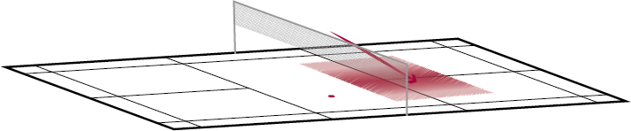

Badminton – Schlagtechnik
Verwerten Vorhand
Mit der Technik-Übung «Verwerten Vorhand» erzielen die Spielende direkte Punkte am Netz.
Bemerkung: Weitere Perspektiven stehen in der Playlist zur Verfügung (Menu oben links).
Wohin fliegt der Shuttle?
Der Shuttle fliegt vom Vorderfeld schnell und steil ins Mittelfeld.
Wann wird der Schlag gebraucht?
Wenn die Spielerin den Shuttle oberhalb der Netzkante spielen und einen direkten Punkt erzielen kann.
Welches sind die wichtigsten Merkmale des Schlags?
Ausgangsposition
- Pfannengriff oder Vorhandgriff.
- Schlagfläche über der Hand und in Schlagrichtung auf den Shuttle ausgerichtet.
- Ellbogen vor dem Körper.
Ausholphase
- Passives Ausholen durch Vorbringen der Hand (Ellbogen leicht strecken)
- Lockere Griffhaltung.
- Alternative: Aktives Ausholen durch leichte Beugung des Ellbogens und Handgelenks.
Schlagphase
- Strecken des Ellbogens und Handgelenks.
- Zupacken des Griffs (Fingerpower).
- Treffpunkt oberhalb der Netzkante vor dem Körper.
Ausschwungphase
- Ganz kurze Ausschwungphase in Schlagrichtung.
Quelle: Richard, Th. et al. (2016). Badminton: Lauf- und Schlagtechnik. Magglingen: Bundesamt für Sport BASPO.
Quelle: Mobilesport.ch - Badminton Lauf und Schlagtechnik